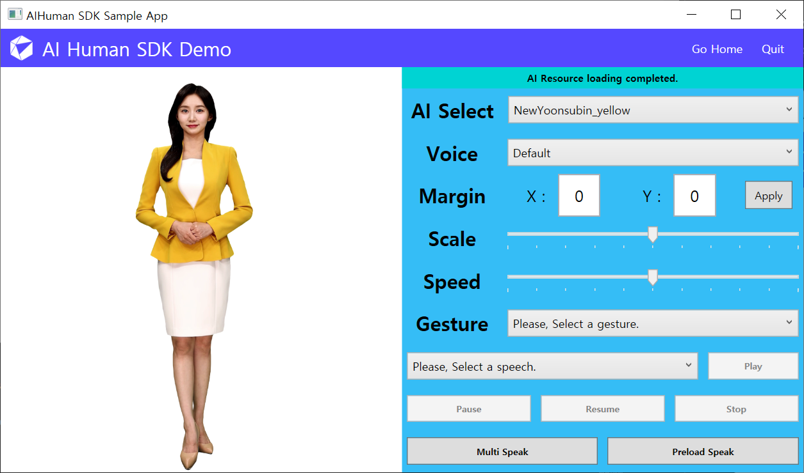

Sample Project Description
The WPF-based sample covered in this document is an example of using the AI Human SDK. Following this guide, you will be able to try out every functionalities in the AI Human SDK one-by-one through implementing the features in AI Human Sample Application.
You can open AIHuman_WPF_Sample.sln first and run the following Sample App after build the solution.
The SDK authentication is enabled automatically on this page. When the screen appears, the authentication action is automatically called, so there is no need to take any other action. All you need to do is input the appId, userkey, uuid, and target platform obtained above. Once authenticated, authentication is maintained until the app is closed, so there is no need to authenticate again. If the menu still doesn't work, check if there is an error in the authentication function(AuthStart) callback. Most of the time, token refresh is the problem.
Menu on HomeView(HomeView.xaml)
Each menu is as follows.
- Quick Start: Quickly see AI Human in action (QuickStartView.xaml)
- AI Human Demo: An example of using AI Human SDK (DemoView.xaml)
- with Playchat & Azure STT: Conversational AI example using AI Human, Playchat, and Azure STT (PlaychatView.xaml)
- with Google Dialogflow: Conversational AI example using AI Human and Google Dialogflow (DialogFlowView.xaml)
- Exit: Exit the App (NavigationBar.xaml)
1. Quick Start
In Quick Start, the following screen appears when the default AI creation and pre-preparation step is completed through AIPlayer. It may take several minutes until it starts speaking depending on the network conditions, as there is a default loading time on the first run. After the first utterance, you can press the input box at the bottom of the screen to type in a sentence that you want to make the AI say. The default AI is Jonathan. (Basically speaking a language that corresponds to the language value set in AI. However, you can implement multilingual services using the following Change the Voice or Language functionality.)
- Speak or Enter: Jonathan speaks the sentence entered in the TextBox at the bottom right.
- Home: Go to HomeView.xaml
- Exit: Close the app.
2. AI Human Demo
AI Human Demo is a page where you can try out various functionalities of AIPlayer. You can try changing to another approved AI model through [AI Select]. For other details, please refer to AIPlayer Description.

First, get a list of available AIs and set up the UI. The Constants.appid, userKey, uuid, and targetPlatform below are parameters entered when calling AuthStart in HomeView.
AIAPI.Instance.AuthStart(Constants.AppId, Constants.UserKey, Constants.Uuid, Constants.TargetPlatform, (aiList, error) =>
{
// You can get a list of available AIs via CallBack.
AIAPI.AIList apiAIlist = JsonConvert.DeserializeObject<AIAPI.AIList>(aiList.Root.ToString());
if (aiList == null)
{
AIStatusText = Resource.ApiAiListEmptyError;
}
AIs = new ObservableCollection<AIAPI.AI>();
foreach (AIAPI.AI item in apiAIlist.ai)
{
AIs.Add(item);
}
SelectedAI = AIs[0];
});
The part that changes AI. In addition to creating and adding AIPlayer, sample text is obtained and the utterance sentence ComboBox is filled. It is updated by getting the rest of the default settings.
private void UpdateSelectedAI()
{
if (_aiPlayer != null)
{
_aiPlayer.Dispose();
_aiPlayer = null;
}
if (_speechList != null)
{
_speechList.Clear();
_speechList = null;
}
_aiPlayer = new(SelectedAI.AIName, this);
AIPlayerObject = _aiPlayer.GetObject();
SpeechList = new ObservableCollection<string>(AIAPI.Instance.GetSampleTexts(SelectedAI.AIName));
SpeechList.Insert(0, Resource.DefaultSpeech);
SpeechIndex = 0;
...
}
Examples of Speak, Preload, Pause, Multi Speak(Randomly), Resume, and Pause.
AIHuman.Core.RelayCommand is used for View and Command Binding. This implementation is only an example and it is not necessary to use AIHuman.Core.RelayCommand.
Please refer to the AIPlayer description that follows below.
private void Speak_Command(object args)
{
_sendingMessage.Clear();
_sendingMessage.Add(_speechText);
_aiPlayer.Send(_sendingMessage.ToArray());
}
private void Preload_Command(object args)
{
_sendingMessage.Clear();
_sendingMessage.Add(_speechText);
_isPreload = true;
_aiPlayer.Preload(_sendingMessage.ToArray());
}
private void Stop_Command(object args)
{
_aiPlayer.StopSpeaking();
AIStatusText = Resource.StopStatus;
}
private void Multi_Command(object args)
{
Random rand = new();
_sendingMessage.Clear();
for (int i = 1; i < SpeechList.Count; ++i)
{
if (rand.Next(0, 100) % 6 % 2 == 0)
{
_sendingMessage.Add(SpeechList[i]);
}
}
_aiPlayer.Send(_sendingMessage.ToArray());
}
private void Resume_Command(object args)
{
_aiPlayer.Resume();
AIStatusText = Resource.ResumeStatus;
}
private void Pause_Command(object args)
{
_aiPlayer.Pause();
AIStatusText = Resource.PauseStatus;
}
By implementing IAIPlayerCallback, it is possible to receive callback from AI operations.
public interface IAIPlayerCallback
{
void onAIPlayerError(AIError error);
void onAIPlayerResLoadingProgressed(int current, int total);
void onAIStateChanged(AIState state);
}
Through onAIStateChanged implementation, you can receive CallBack of AI states shown below.
SPEAKING_STARTED: AI started speaking.
SPEAKING_COMPLETED: AI finished speaking.
SPEAKING_PREPARE_STARTED: AI started preparation to speak.
RES_LOAD_COMPLETED: AI Resource loading completed.
RES_LOAD_STARTED: AI Resource loading started.
SPEAKING_PREPARE_COMPLETED: AI finished preparation to speak.
3. with Playchat & Azure STT
This demo is an example of a conversational AI service linked with AI Human + Playchat + Azure STT. Basically, AI Human and Playchat are in the form of chatting by the user inputting with the keyboard. Additionally, use Azure STT to speak like a real person. When the AI load is complete, the AI greets you. ("Hello, long time no see.")
After the greeting, chat or click the STT button at the bottom to get a voice input signal, say "where are you". (Actual operation is possible after the Azure STT setup is completed. It is explained below in this chapter.) The AI understands the voice and the AI gives an appropriate answer. Currently, as it is a test chatbot, it can answer only a few limited questions, but if the chatbot is advanced, it can be used in various ways, such as ordering at a restaurant or making a reservation for a performance depending on the situation. In addition, the chatbot can also display images by sending additional information in addition to text.
Using AI + Chatbot + Speech Recognition together
If you want to use the conversational AI service mentioned in the demo, you need to prepare as follows.
- Prepare your Playchat Bot ID: Already prepared in the sample (https://www.playchat.ai/docs/en/menual-chatbot-en.html)
- Prepare Azure Speech Service Key and Endpoint: https://docs.microsoft.com/en-us/azure/cognitive-services/speech-service/overview
Assign values to the PLAYCHAT_BOT_ID, AZURE_STT_URL, and AZURE_SUBSCRIPTION_KEY variables declared at the top of the class definition of the PlaychatViewModel.cs file.
The main thing is to continue the conversation with AI and voice. For this, AIPlayer, chatbot, and voice recognition must work harmoniously. The class that implements this is PlaychatViewModel.
First, after the chatbot is loaded, it sends a "start"(Constants.KEY_START) signal to the chatbot, and when the chatbot recognizes it, it sends a greeting message. The greeting is delivered via IChatbotCallback's OnChatbotMessage function. PlaychatViewModel extracts the sentences to be delivered to AI from this message and delivers them to AIPlayer, allowing AI to speak.
public void OnChattingReady()
{
SendMsgToChatbotAndUpdateChatUI(Constants.KEY_START, null);
}
public void OnChatbotMessage(JObject response)
{
OnNewChatMessage(response);
if (response != null)
{
// get func_name, args
string fName = response.GetValue(Constants.KEY_FUNC_NAME).ToString();
JObject args = response.GetValue(Constants.KEY_ARGS).ToObject<JObject>();
// process for functions accordingly
ProcessOnNewFunc(fName, args);
}
}
Data transfer format of Chatbot (Playchat)
When speech is recognized through Azure STT, the content is delivered directly to the Playchat server. However, there are situations where you need to manually send a message or special signal to the chatbot. (This includes the "start" signal mentioned above.) To send the user's message, use the chatbot's Send function.
bool Send(string command, JObject detail)
Write the server function name you want in the command, and put the necessary arguments as key:value in detail. The currently set command (or func_name, the same) is as follows.
namespace AIHuman.Common.Constants
{
// send
public const string VALUE_USERINPUT_FUNCNAME = "userInput";
public const string KEY_START = "start";
// recv
public const string VALUE_FUNCNAME_ONMESSAGE = "onMessage";
// extra
public const string VALUE_USERINPUT_NEXT = ":next";
}
-
In the userInput function, input the argument value with text as the key.
-
start function takes no arguments.
-
OnMessage basically comes with the following values. In particular, if the next value is true for 'extra' here, it means that there are additional messages.
/* example
{"func_name":"onMessage",
"args":
{"kind":"Content",
"text":"Hello, long time no see.",
"languages":{"en":"Hello, long time no see."},
"image":{"url":"http://...,"displayname":"office image.jpg"}
"extra":{next:true}}}
*/
- If there is an additional message, you can receive the additional message by sending it by adding ":next" (VALUE_USERINPUT_NEXT), which is a special argument indication, as the argument text in userInput.
private void RequestNextMessageIfNeeded(JObject args)
{
if (args != null)
{
JObject extra = (JObject)args.GetValue(Constants.KEY_EXTRA);
if (extra != null)
{
bool next = (bool)extra.GetValue(Constants.KEY_NEXT);
if (next)
{
SendUserInputToChatbot(Constants.VALUE_USERINPUT_NEXT);
}
}
}
}
Many of the above explanations have been omitted. Open the solution file of the sample and refer to the Playchat.xaml and PlaychatViewModel.cs files.
4. with Google Dialogflow
This demo is a conversational AI service using AI Human and Google Dialogflow, and it is another example that shows that AI Human can be used together with other services such as Chatbot. (Actual operation is possible after Google Dialogflow is set up. It is explained below in this chapter.)
Using AI + Google Dialogflow together
If you want to use the conversational AI service mentioned in the demo, you need to prepare as follows.
- Preparing the Dialogflow Credential File: https://cloud.google.com/dotnet/docs/reference/Google.Cloud.Dialogflow.V2/latest
- https://cloud.google.com/docs/authentication/getting-started
- As mentioned in the above official site, the path of the Credential Json file must be registered in the environment variable.
Assign the Credential Json file > project_id value to the DF_PROJECT_ID variable declared at the top of the class definition of the DialogFlowViewModel.cs file.
You can create a Chatbot client using Google.Cloud.Dialogflow.V2.SessionsClient.Create(). Create a session through SessionName.FromProjectSession(DF_PROJECT_ID, DF_SESSION_ID) and use it when calling client.DetectIntent or client.DetectIntentAsync.
For details, open the solution file of the sample and refer to the DialogFlowView.xaml and DialogFlowViewModel.cs files.